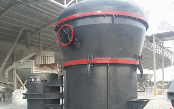

The development of the domestic mining equipment manufacturing industry has undergone two changes in, first product developed by imitation to innovation model transformation; the second is the economy to benefit from extensive transformation. Expected future development trend of raymond mill industry, will be toward large-scale, digital intelligent and green energy technology.
Energy saving and environmental protection has become an weathervane development of various industries, especially raymond mill industry. R & D and manufacturing Raymond mill, should pay more attention to efficiency, energy-saving aspects of research, carried out for the improvement of manufacturing zero pollution, high efficiency, low energy consumption and mechanical life of these critical links. raymond mill on the current market, the processing capacity of Oita election high efficiency, low energy consumption and energy saving equipment will be more popular, more urgent needs of the market.
Raymond Mill powder industry will be mainly in the high reliability, precision, automatic condition monitoring and automatic control direction. SCR can supply, AC variable speed, centralized grease lubrication, shock absorption and other measures, and condition monitoring and automatic control computer and other devices. Which require high reliability and enhanced by mechanical principles rationalization study grinding ring, wear under gland, etc., to improve the machine in continuous operation before the next bearing lubrication. Automatic control can effectively improve the raymond mill work efficiency and accuracy, and security. The operator only needs to be in the operating room control button.
With applications for powder product fineness requirements continue to increase, milling equipment industry inevitably toward refinement and scale direction, raymond mill is no exception. With the continuous development of powder industry, the market application requirements for raymond mill is also rising. Raymond mill as the main equipment of grinding powder industry, in order to meet the requirements of different applications, to "high reliability, energy saving, accurate, automated" development is the inevitable trend.
Raymond Mill Machinery Group in a "generation of production, expansion of generation, development of generation, planning generation" research and development ideas, track international new technology, and gradually increase investment in research and new product development efforts, research and development of new products, protection products lead the industry trend. According to the user's needs, innovative services, improve service levels, expand the service channel, with our sincere, efficient, detail, enthusiasm and first-class products to meet the needs of users.
Live chat with our professional customer service! Get the quotation list.
Chat Now